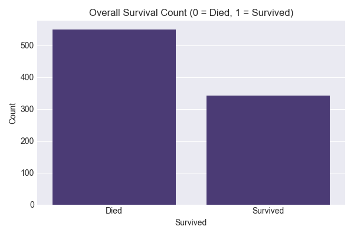
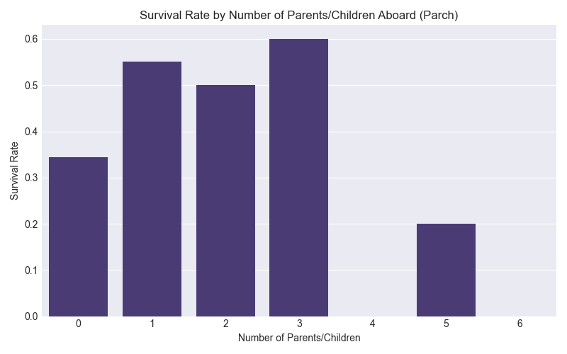

タイタニック号データセット分析：生存要因の解明
このプロジェクトでは、Kaggleの有名なタイタニック号データセットを用いた探索的データ分析（EDA）を行いました。 主な目的は、タイタニック号の悲劇的な沈没事故において、乗客の生存に影響を与えた要因を調査することです。 客室クラス、性別、年齢、同乗していた家族の人数といった乗客の特徴を分析することで、生存に関連するパターンや洞察を明らかにすることを目指しました。
使用ツール： Python (Pandas, NumPy, Matplotlib, Seaborn)
データソース： Kaggle タイタニック号コンペティション
データの概要と準備
データセットには、乗客に関する以下の情報が含まれています：
- Survived (生存状況)： 目的変数 (0 = 死亡, 1 = 生存)
- Pclass (客室クラス)： チケットの等級 (1 = 1等, 2 = 2等, 3 = 3等)
- Sex (性別)： 乗客の性別
- Age (年齢)： 乗客の年齢（歳）
- SibSp (兄弟姉妹/配偶者の数)： タイタニック号に同乗していた兄弟姉妹または配偶者の人数
- Parch (親/子供の数)： タイタニック号に同乗していた親または子供の人数
- Ticket (チケット番号)： チケットの番号
- Fare (運賃)： 乗客が支払った運賃
- Cabin (客室番号)： 客室の番号
- Embarked (乗船港)： 乗船した港 (C = シェルブール, Q = クイーンズタウン, S = サウサンプトン)
初期のデータ準備では、欠損値の処理を行いました。「年齢(Age)」の欠損値は中央値で補完しました。 「乗船港(Embarked)」の少数の欠損値は最頻値で補完しました。「客室番号(Cabin)」は欠損値が非常に多かったため、その情報が存在するかどうかを「客室情報有無(Cabin_Known)」という二値特徴量に変換し、生存への影響を評価しました。
探索的データ分析（EDA）と可視化
以下の可視化は、データから見出された主要な関連性を示しています。
1. 全体の生存率
全体の生存率は約38.38%でした。残念ながら、生存しなかった乗客の方が多い結果となりました。
2. 性別と生存率
女性の生存率は約74.20%と、男性の約18.89%と比較して著しく高い結果でした。これは、海難事故の際にしばしば守られる「女性と子供を先に」という原則を強く裏付けています。
3. 客室クラス (Pclass) と生存率
1等客室の乗客の生存率が最も高く（約62.96%）、次いで2等客室（約47.28%）、3等客室の乗客の生存率が最も低い（約24.24%）結果でした。これは、社会経済的地位が生存に重要な役割を果たしたことを示唆しており、救命ボートへのアクセスやデッキの階層などが影響したと考えられます。
4. 年齢分布と生存
幼い子供（特に12歳未満）は顕著に高い生存率を示しました。成人においては年齢とともに生存率が低下する一般的な傾向が見られる一方、高齢の乗客（60歳以上）の生存率は特に低い結果でした。
5. 家族の人数 (SibSp, Parch, および合計) と生存率
少人数の家族（他の家族1～3人、合計2～4人規模）と旅行していた乗客は、単独の乗客や非常に大人数の家族と比べて生存率が高い傾向にありました。 これは、互いの助け合いや、少人数の家族ユニットが優先的に避難できた可能性などが考えられます。単独または非常に大人数（5人以上）の家族の生存率は低い結果でした。
6. 運賃 (Fare) と生存率
支払われた運賃と生存の間には、明確な正の相関が見られました。より高い運賃を支払った乗客（多くの場合、より高い客室クラスや良い場所の客室を示唆します）ほど、生存する可能性が高い結果でした。運賃の分布を見ると、高額な運賃の層は主に生存者に集中していました。
7. 乗船港 (Embarked) と生存率
シェルブール（C）から乗船した乗客は、クイーンズタウン（Q）（約38.96%）やサウサンプトン（S）（約33.70%）から乗船した乗客と比較して、生存率が高い（約55.36%）結果でした。これは、シェルブールからの乗客に1等客室の割合が高かったことと関連している可能性があります。
8. 客室情報の有無と生存率
客室情報が記録されていた乗客は、情報が不明だった乗客（約29.99%）と比較して、著しく高い生存率（約66.67%）を示しました。客室情報が判明していることは、より高い客室クラスや運賃と強く相関しており、それらが救命ボートへのアクセスの良さや上層デッキの客室位置に繋がったと考えられます。
主要な発見と結論
タイタニック号データセットの探索的データ分析から、生存と強く関連するいくつかの主要な要因が明らかになりました：
- 性別： 「女性と子供を先に」という方針を反映し、女性は男性よりもはるかに生存する可能性が高かった。
- 客室クラス (Pclass)： より高い等級の客室（1等 > 2等 > 3等）は、生存の可能性を著しく高め、強い社会経済的影響を示した。
- 年齢： 幼い子供は生存率が高く、高齢者は低かった。成人の生存者の多くは若年層から中年層であった。
- 家族の人数： 少人数の家族（2～4人）との同乗は、単独または非常に大人数の家族よりも有利であった。
- 運賃と客室情報： より高い運賃と判明している客室情報（多くはより良い客室クラスや上層デッキの客室位置と関連）は、生存確率の高さを示す強力な指標であった。
- 乗船港： シェルブール（C）から乗船した乗客は、おそらく同港からの1等客室乗客の割合が高かったため、より高い生存率を示した。
これらの発見は、タイタニック号の生存者を決定づけた社会経済的地位、人口統計学的要因、そして状況的要因の複雑な相互作用を浮き彫りにしています。 「女性と子供を先に」という原則は明白でしたが、富と階級もまた重要な役割を果たしました。 この探索的データ分析は、これらの乗客特徴に基づいて生存確率を推定する予測的な機械学習モデルを構築するための強固な基盤を提供します。